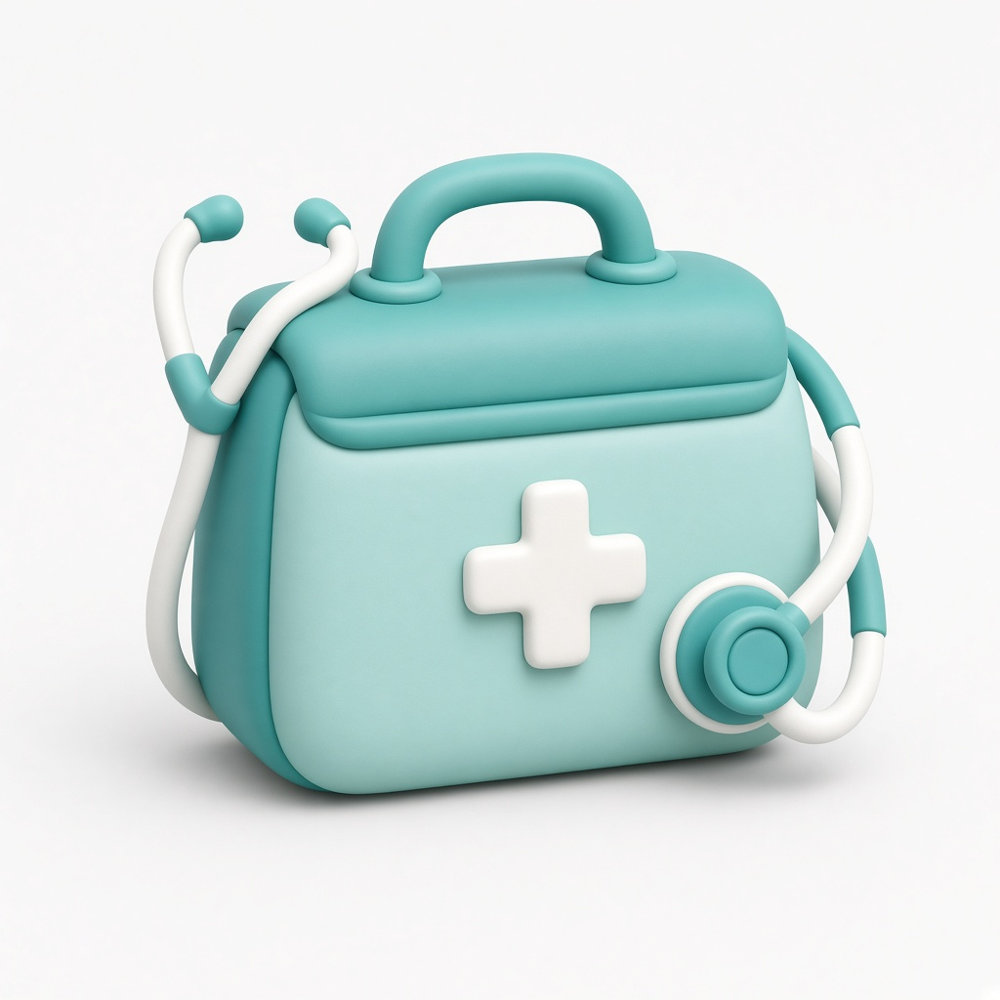

Выезд и осмотр
2 000 ₽
Когда нужно сначала оценить состояние и понять, какая помощь требуется.
Что входит:
- выезд по адресу у метро Белорусская;
- первичный осмотр;
- измерение основных показателей;
- сбор анамнеза;
- оценка возможности помощи на дому;
- рекомендации по дальнейшим действиям.
Доплата за выезд в этой зоне: 0 ₽